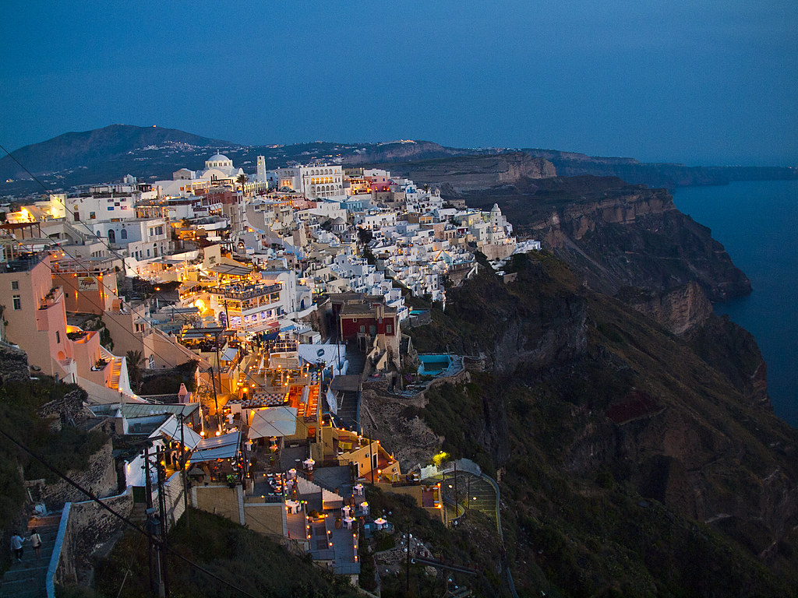
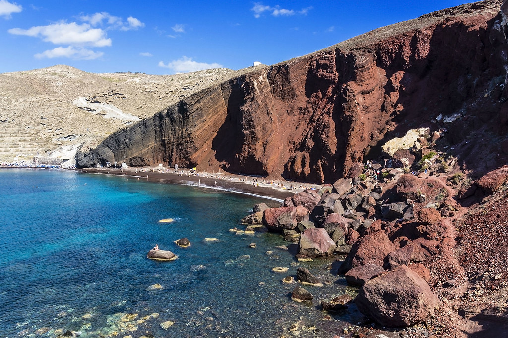

Hotel Kavalari
Ipapantis, Thira 847 00
Santorini
Fechas disponibles: 24 al 28 de mayo
Alojamientos
Aria Suites
Fira, Santorini 847 00Astra Suites
Imerovigli, Imerovigli, Santorini 847 00Hotel Costa Grand Resort
Kamari 847 00Itinerario
Día 1 - 24 de mayo
- Llegada a Santorini y traslado al hotel
- Paseo por Fira (capital de la isla)
- Primeras vistas de la caldera volcánica
- Cena en restaurante con vistas al mar Egeo
Día 2 - 25 de mayo
- Visita a Oia y sus famosas casas blancas
- Mirador para ver la puesta de sol
- Paseo por callejuelas tradicionales
- Cena en Oia
Día 3 - 26 de mayo
- Excursión en barco por la caldera volcánica
- Visita a las aguas termales naturales
- Baño en el mar Egeo
- Regreso a Fira y tarde libre
Día 4 - 27 de mayo
- Visita a la playa roja
- Playa negra de Kamari
- Tiempo libre de relax y baño
- Cena de grupo con gastronomía griega
Día 5 - 28 de mayo
- Desayuno tranquilo con vistas a la caldera
- Paseo final por Fira
- Compras de recuerdos
- Regreso
Actividades

Culturales
- Fira (capital de Santorini)
- Oia y arquitectura cicládica
- Museo de la Prehistoria de Thera

Aventuras
- Excursión en barco por la caldera
- Baño en aguas termales volcánicas

En naturaleza
- Playa Roja
- Playa de Kamari
- Acantilados de la caldera
Precios: Desde 2100 € a 3200 €